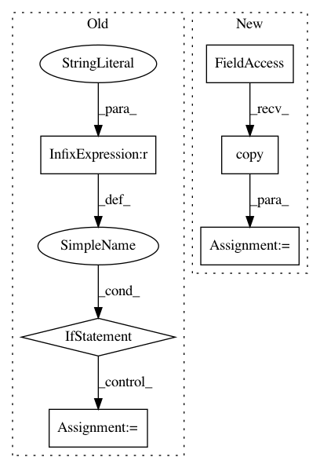

35999e65a83c8b9f67b833623a5b9ce47af7cc71,luminoth/utils/training.py,,get_learning_rate,#Any#Any#,16
Before Change
method = train_config.learning_rate_decay_method
if not method or method == "none":
return train_config.initial_learning_rate
if method not in LEARNING_RATE_DECAY_METHODS:
raise ValueError("Invalid learning_rate method "{}"".format(method))
if method == "piecewise_constant":
learning_rate = tf.train.piecewise_constant(
global_step, boundaries=[
tf.cast(train_config.learning_rate_decay, tf.int64), ],
values=[
train_config.initial_learning_rate,
train_config.initial_learning_rate * 0.1
], name="learning_rate_piecewise_constant"
)
elif method == "exponential_decay":
learning_rate = tf.train.exponential_decay(
learning_rate=train_config.initial_learning_rate,
After Change
Raises:
ValueError: When the method used is not available.
lr_config = train_config.learning_rate.copy()
decay_method = lr_config.pop("decay_method", None)
if not decay_method or decay_method == "none":
return lr_config.get("value") or lr_config.get("learning_rate")
In pattern: SUPERPATTERN
Frequency: 3
Non-data size: 6
Instances
Project Name: tryolabs/luminoth
Commit Name: 35999e65a83c8b9f67b833623a5b9ce47af7cc71
Time: 2017-09-19
Author: javirey@gmail.com
File Name: luminoth/utils/training.py
Class Name:
Method Name: get_learning_rate
Project Name: tryolabs/luminoth
Commit Name: 35999e65a83c8b9f67b833623a5b9ce47af7cc71
Time: 2017-09-19
Author: javirey@gmail.com
File Name: luminoth/utils/training.py
Class Name:
Method Name: get_optimizer
Project Name: OpenMined/PySyft
Commit Name: 3053647783990ddcdbe91c2e37ea245c591e9c8e
Time: 2021-02-12
Author: xvtongye1986@163.com
File Name: src/syft/core/node/common/action/run_class_method_action.py
Class Name: RunClassMethodAction
Method Name: execute_action